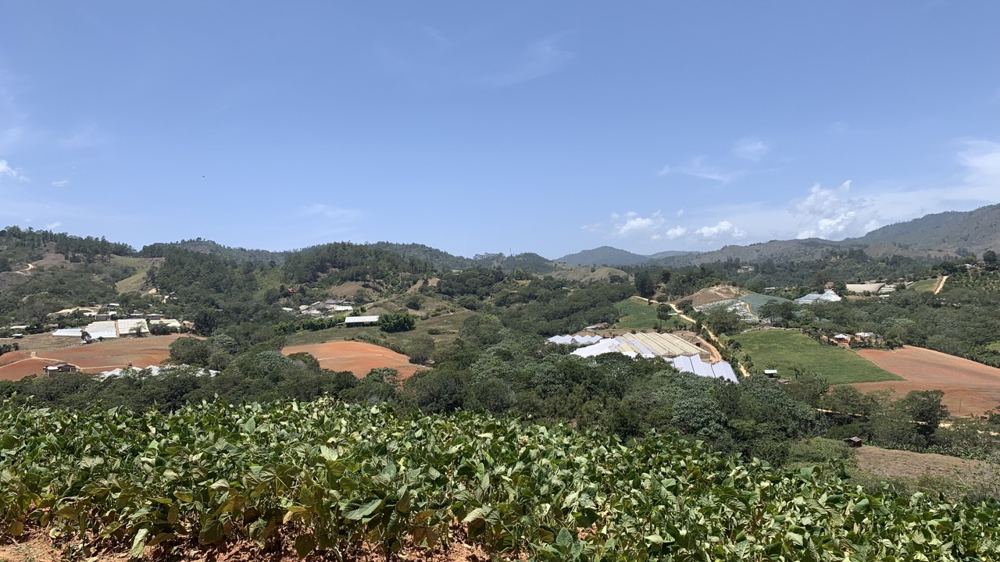
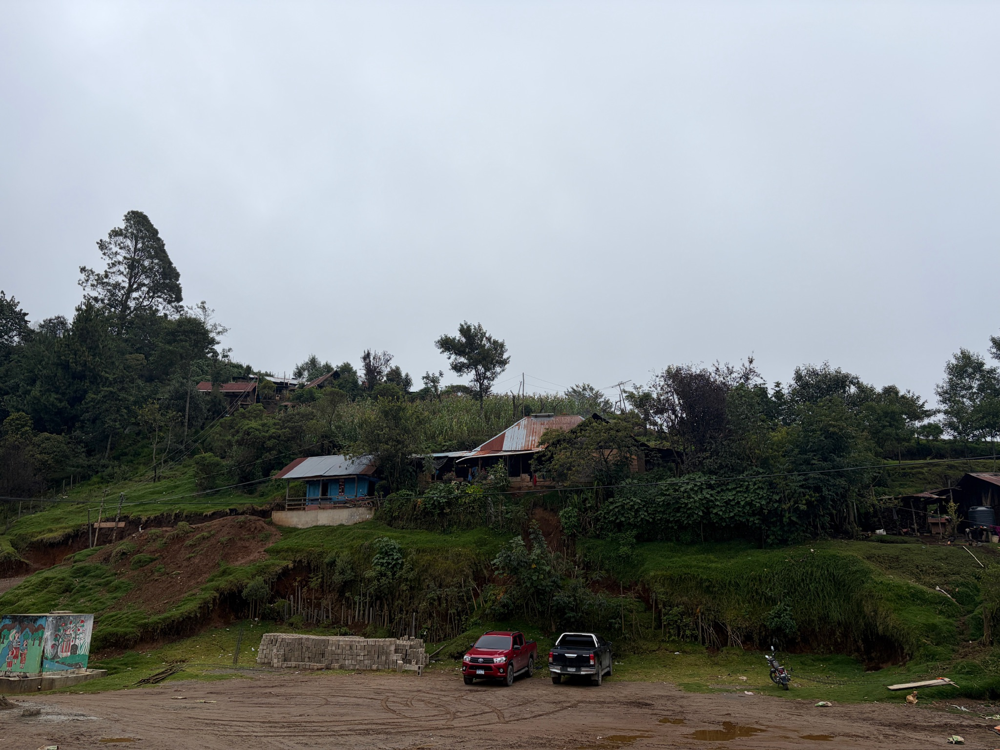
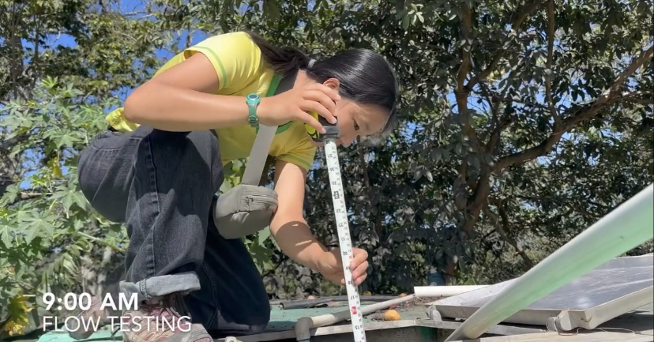
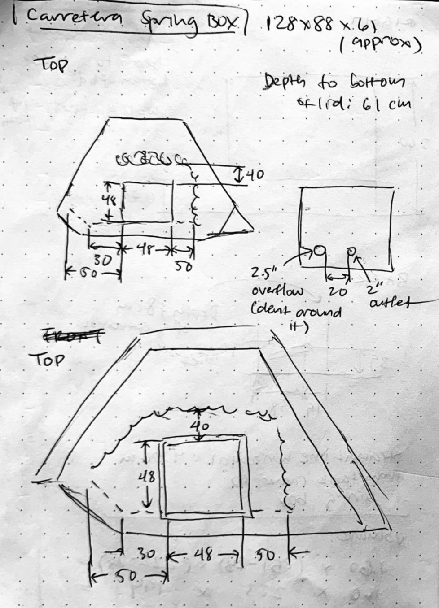
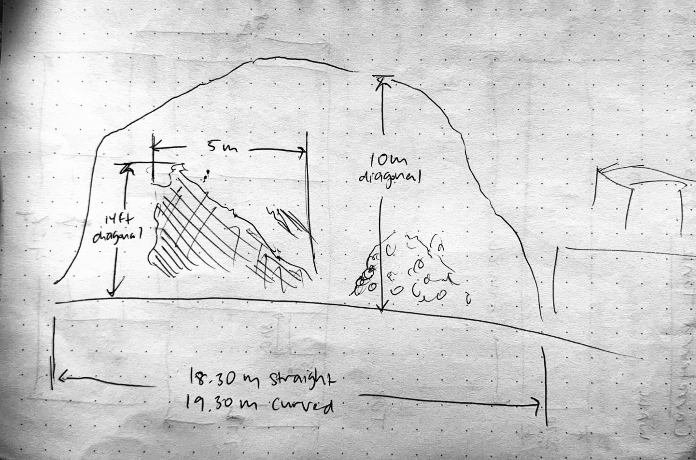
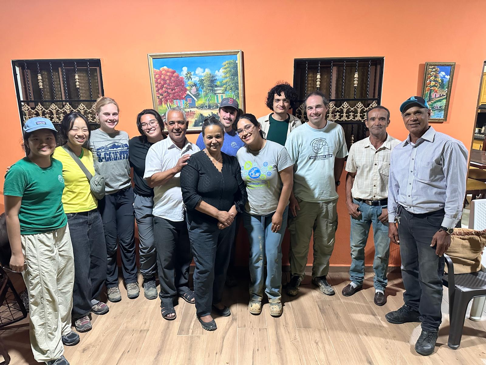

Problem Statement

Dominican Republic

Guatemala
I've been involved in two projects:
1. A 9-year-long project in the Dominican Republic to build a gravity-fed water system with a borehole well and two tanks (closed out in 2025).
2. A new project in Guatemala to create solar-powered water distribution from spring sources.
Contributions

Measuring water level

Completed storage tank

Spring box sketch

Cliff sketch
- Revised Revit drawings for water storage tanks based on professional feedback
- Contacted suppliers to source pumps meeting required specifications
- Conducted water flowrate and water quality testing on-site
- Structured clear documentation for on-site trips using Microsoft Office tools
Challenges
- Navigating language barriers
Results

Group photo
We closed out the Dominican Republic project with our monitoring and evaluation trip in August 2025. The system was able to deliver 24 gal/day/person for every person in the community.